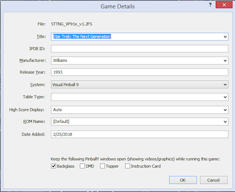
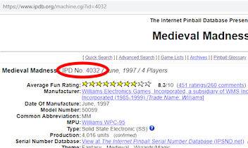

Show this window's graphics while running
Show this window's graphics while running
 Blank this window while running
Blank this window while running
PinballY keeps track of some extra information for each game in your collection. This includes descriptive information about the game (title, manufacturer, year of release), plus internal information that PinballY uses to customize how the game is displayed and launched.
You can edit most of these details directly through the main PinballY wheel user interface:
That will display the Game Details dialog:
If a game hasn't been configured yet, the main menu will include the Game Setup command when the game is selected in the wheel. You can use this command to reach the Game Setup menu, where you can select Edit Game Details to bring up the Game Details dialog.
When you first open this dialog for a game that hasn't been configured yet, most of the fields will be blank. The only ones that are normally pre-filled are the Title, which will contain the file name of the table file, and possibly the System, which PinballY can usually guess from the folder path where the game file was found. In cases where you've set up two or more systems that share the same table folder, though, the system will be ambiguous, so PinballY won't be able to guess and will leave the System field blank.
Filling in the form from IPDB data: Take a close look at the Title field, and you'll notice that there's a little drop-list arrow next to it. Click the arrow (or press the Down Arrow cursor key) to display a list of possible matches from IPDB. PinballY has a built-in list of titles from IPDB that it tries to match to the filename.
The initial selection list is based on the game's filename, since that's all PinballY has to work with at this point. In many cases, the filename will contain enough of the game's true title that PinballY can find a good match in the IPDB title list. In some cases, though, filenames are so cryptic that they stump the "fuzzy match" guesswork that PinballY is doing here.
If the drop list includes the correct title for the table, simply select it with the mouse or arrow keys (if using the arrow keys, press Enter to confirm the selection). PinballY will automatically fill in the rest of the form with the game's details from the IPDB list.
What if the drop list doesn't include the title you're looking for? In this case, you can help improve PinballY's guesswork by typing the first few characters of the correct title into the box. As you type, the drop list will show new guesses based on what you're typing, similar to how Google shows you suggested search terms as you type. In most cases, the correct title will appear after you enter a few characters. Once it does, select it with the mouse or arrow keys (press Enter to confirm if you use the arrow keys). PinballY will automatically fill in the rest of the form with the IPDB information for the table you select.
Matching a filename to a real machine's title requires a bit of guesswork on PinballY's part, since table file names tend to be a bit cryptic. They often use initials or abbreviations, and usually have a bunch of other information apart from the title packed into them, such as the author's nickname, table version numbers, system version numbers, etc. The list that pops up usually has five or ten possible matches, and of course only one of these can be right (if the right match is there at all). That's why PinballY doesn't just pick one on its own: it needs your human intervention to make the final decision.
Filling in the details manually: If you can't find the right match for the game in the title drop list even after typing the full name, or if there's anything you disagree with in the pre-populated data, you can simply type values into any of the fields manually.
Filling in the details form the IPDB number: If you know the IPDB number for the table you're entering, you can skip all of the title searching described above and just enter the IPDB number. Then click the button labeled "Fill in form from this IPDB ID" - this will populate the rest of the form with details from the IPDB list, just like when you select a title from the title drop list.
Choosing the system: If the System box isn't already filled in, you'll have to specify the system manually. The program figures out which system or systems are associated with the table folder where the file is located; if there's only one system using that table folder, the program automatically selects that system, since that's the only one it could be. But if you've set things up so that there are two or more systems sharing the same table folder, PinballY can't guess at the system based on the file path alone. In that case, you'll have to specify the system manually. Simply use the drop list to select the system that you want to be used when the game is launched.
After a game has been set up the first time, PinballY removes the Game Setup command from the main menu. Most people don't want to see a bunch of administrative options on the main menu during normal play; once a game has been set up, it's considered to be ready for normal play. But Game Setup is always available through the Operator Menu:
Title: The title of the game. PinballY uses this to display the game's name in the wheel UI. This also serves as part of the "key" that identifies the game in the XML database (the title is combined with the manufacturer name and year to form the full ID).
IPDB ID: If the game is a re-creation of a real table that has an entry on IPDB, you can fill this in with the game's ID on IPDB. The ID is a number that IPDB uses as its database key to identify the game. If you look up the game on IPDB through a search, you'll find the ID number listed right at the top of the listing:
PinballY doesn't currently do much with the IPDB ID other than storing it, but I think it's a good piece of information to have on hand, if only for future reference. It would make a particularly good key for correlating information from external sources, since it's so specific and unambiguous.
Manufacturer: The name of the company that built and marketed the original pinball machine, such as Williams or Gottlieb. For a purely virtual table (one that never existed as a physical arcade pinball machine), you could enter the software publisher or author's name here.
I prefer to use the informal marketing name of the manufacturer here (e.g., "Williams") rather than the full legal name of the company ("Williams Electronic Games, Inc."), which you'll find if you look games on IPDB. PinballY uses the name you enter here for a number of purposes, such as selecting which logo file to use, so it's easier to shorten those long legal names down to the more familiar marketing names. If you let PinballY auto-populate this field based on the title, it'll use the short name.
Release year: The year of release of the original real pinball machine, or, for a purely virtual game, the year the software was first published. Use a full four-digit year number here (e.g., 1995, not 95).
System: The game player system that PinballY should use to launch the game. The drop list will only allow you to choose systems that are associated with the table folder where the file is located.
Table type: The IPDB table type classification:
High score display: The style to use for the synthesized high score displays that PinballY shows in the DMD window.
ROM name: The name of the ROM for this game. This is only applicable to games that use VPinMAME, and Visual Pinball is currently the only system that uses VPinMAME, so you can leave this blank for games based on other systems. PinballY uses this information when fetching high scores from ROM-based games, and to inform DOF which game is loaded on the wheel (to select game-dependent DOF effects, such as flipper button colors and undercab lighting colors). "Default" lets PinballY pick the ROM automatically based on the list of tables in the DOF configuration. You can select a specific ROM if the automatic selection is wrong.
Date added: The date that you added the game to your system, in MM/DD/YYYY format (month/day/year). This is automatically populated with today's date the first time you set up a game, but you can set a different date if you actually installed the game earlier and are just now setting it up in PinballY. This is used primarily for the sake of the "Date Added" filters, to let you select games that were added within or outside of a certain time horizon.
Media name: This is the base filename to use for this game's media file (the table's main background image and video, backglass image and video, etc). By default, this takes the form "Title (Manufacturer Year)". That's the naming pattern that most HyperPin Media Packs use, so this usually matches any existing media files that you previously installed for HyperPin or PinballX.
If this is set to [Default], the dialog automatically updates the media name using the "Title (Manufacturer Year)" pattern when you click the OK button. If you change the media name to anything else, it overrides the normal pattern, so the dialog will leave the name you enter unchanged when you click OK. This lets you customize your media file names if you prefer, which might be desirable if you're using existing media files that weren't already using the HyperPin/PinballX naming conventions.
Grid Row x Col: The coordinates of the game in the "grid" for the game system's game selection UI. Enter this as row x col, as in 3x4 for row 3, column 4.
This is only displayed if the selected system uses the grid position somewhere in its startup keys script (see Startup Keys in System Options).
The grid position is an idiosyncratic feature designed mostly for Farsight's The Pinball Arcade, which doesn't provide a way to launch a game directly from an outside program, but always requires you to go through its own internal game selection menu every time it starts. PinballY lets you define a series of keystrokes (the Startup Keys setting mentioned above) to send to the game system just after launching to try to navigate to the right game. Since Farsight arranges their game selection UI as a rectangular grid, the key script had to know how many "down" and "right" arrow keys to send to get to any given game; that's what the grid position entry is for.
"Keep the following windows open...": These checkboxes let you tell PinballY to continue showing one or more of the PinballY windows while the playing this game. The selected windows will remain in the foreground and will continue to show their background graphics or videos throughout the game.
Normally, PinballY blanks all of its windows while a game is running, and allows the running game to place its windows in front of the PinballY windows (to the extent they're situated in the same display area). The assumption is that you want the game to take over the entire display while it's running, and that you don't want PinballY wasting CPU time and video memory by continuing to play back videos in windows that are covered up by the running game.
However, some game systems and some individual games only use a portion of the display. For example, few systems display anything at all in the "Topper" monitor (if you have one). Some games don't even include any backglass or DMD graphics. In these cases, you might prefer to let PinballY keep showing its graphics in the display areas that the game system doesn't use, so that there's something more interesting in those areas than blank black backgrounds. Simply check the box for each window that you want PinballY to keep open while the game is running. PinballY will continue to show the game's video or background image in that window during play.
When you set a window to continue showing graphics while running, PinballY also forces that window into the "topmost" window layer on the monitor while the game is executing, so that the PinballY window stays in front of any window the game itself displays in the same screen area. This is an attempt to ensure that the PinballY window not only fills in for missing game graphics, but actually replaces any graphics the game tries to display in that screen area. The idea is to let you replace any game graphics that you don't like with your own custom images or videos. For example, some systems make a half-hearted attempt at backglass graphics by displaying a static image with no animation. You might prefer to show the PinballY backglass video throughout play instead in such cases. The automatic "topmost" layering helps ensure that the PinballY window will appear in front of the game system's window, effectively replacing it on the screen. (This isn't absolutely guaranteed to keep the PinballY window in front, because the game could also lay claim to the "topmost" layer, in which case it will usually have precedence because it's the foreground application. You might need to resort to tweaking the game's settings in such a case to tell the game not to show the unwanted window.)
These checkboxes are a little unusual in that they have three possible states:
Show this window's graphics while running
Blank this window while running
The first two settings, (always show)
and (always blank), let you specify
exactly what to do for this particular game, overriding the system settings
and the global settings. If you select one of these options, it doesn't
matter what options are set for the game's system; the window will always
do what you specify here for this game. The third setting,
 (use defaults), lets you leave it
up to the system or global settings to decide what to do. If you choose
this option, the system or global settings will be consulted each time the
game is run, so whatever system or global settings are in effect then
will be used.
(use defaults), lets you leave it
up to the system or global settings to decide what to do. If you choose
this option, the system or global settings will be consulted each time the
game is run, so whatever system or global settings are in effect then
will be used.
Note that you can also select which windows to show on a per-system basis, using the controls in the player system options page of the main settings dialog, as well as globally (for all games and all systems), using the Game Launch page of the settings dialog. In some cases, you might want to enable a particular window for all games, in which case it's more convenient to use the global Game Launch options. For example, since none of the current player systems feature a dedicated instruction card window, you might want to enable PinballY's instruction card window across the board. In other cases, you might want to enable a particular window for all games that run under a particular player system, in which case you can configure it in that system's settings page, so that the setting applies to all games using that system. For example, some player systems don't show anything in the backglass window, so you might want to keep the PinballY backglass active for all games using that system.
The details for a game are split between two files: